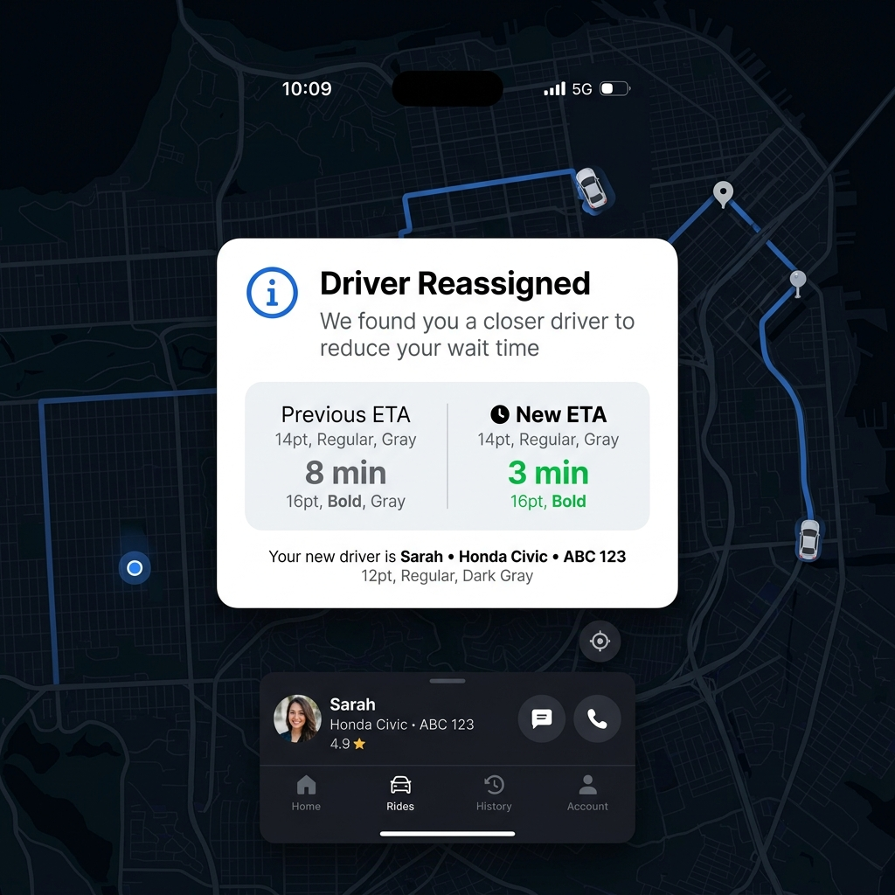
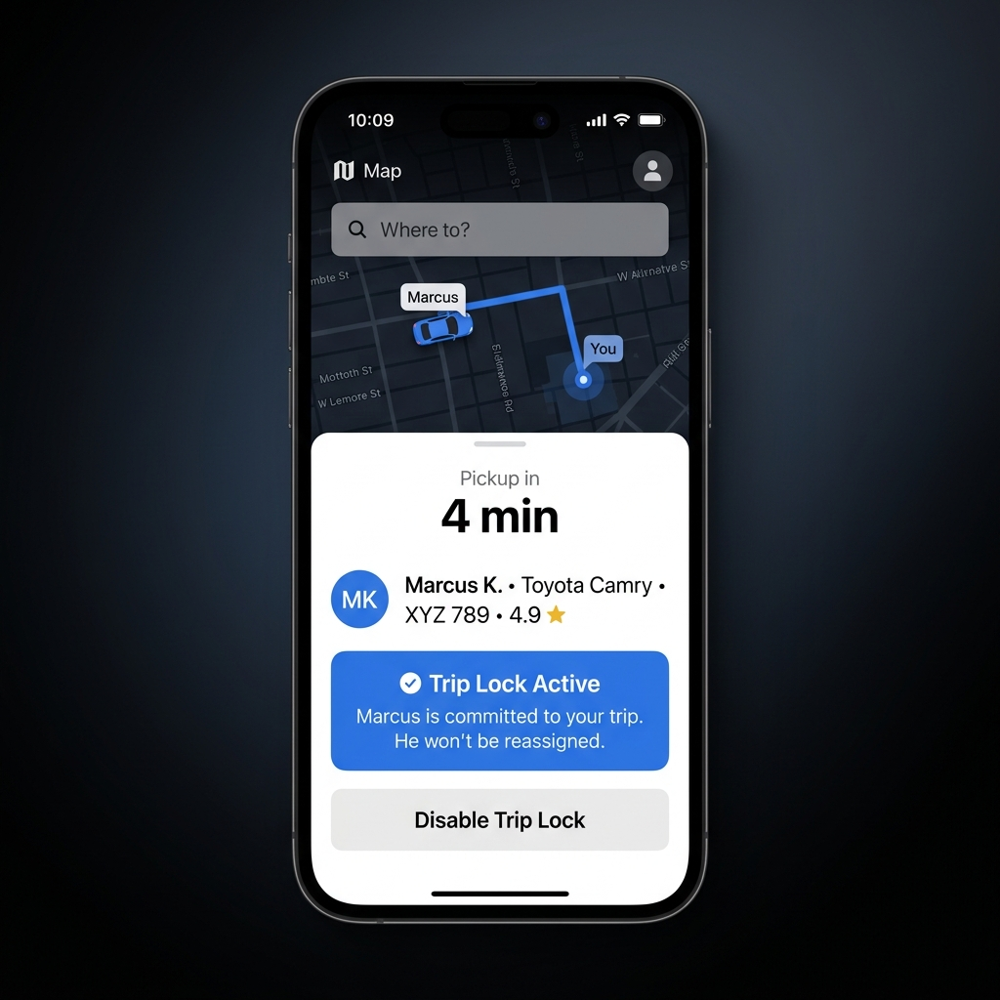

The Silent Switch Problem
Users face anxiety and missed appointments when algorithms silently re-dispatch drivers without clear communication or user consent.
Uber's dispatch algorithm optimizes for marketplace efficiency — matching drivers and riders to minimize overall wait times and maximize utilization. However, this optimization happens invisibly to end users.
Real User Scenarios
Airport trips: Driver shown as "2 min away" suddenly becomes "8 min away" with no explanation, risking flight check-in deadlines.
Medical appointments: Users watching their driver approach only to see them reassigned, causing panic about missing critical appointments.
Business meetings: Lack of arrival time certainty makes it impossible to plan with confidence.
The Efficiency vs. Trust Trade-off
Re-dispatch logic over-indexes on global marketplace efficiency at the cost of individual trip reliability and user trust.
While re-dispatch may improve system-wide metrics, it creates a psychological contract violation for individual users who believe they have a committed driver.
System Perspective (Algorithm)
- ✓ Optimizes for average wait times across all riders
- ✓ Maximizes driver utilization and earnings
- ✓ Reduces total miles driven (environmental benefit)
- ✓ Improves marketplace liquidity
User Perspective (Individual)
- ✗ Feels abandoned when driver is reassigned
- ✗ Loses trust in ETA accuracy
- ✗ Cannot plan with certainty for time-critical trips
- ✗ No control or visibility into decision-making
Designing for Trust & Transparency
A two-pronged approach combining transparency alerts with user-controlled trip-lock functionality to balance marketplace efficiency with rider trust.
Feature 1: Re-Dispatch Transparency Alerts

Design Principle: Make the invisible visible. When re-dispatch occurs, inform users immediately with clear before/after comparison.
- Show both previous and new ETA for transparency
- Explain why the change happened ("closer driver found")
- Display new driver details to rebuild trust
- Only show when re-dispatch increases wait time significantly
Feature 2: Trip-Lock for High-Stakes Rides

Design Principle: Give users control over commitment level for critical trips.
How Trip-Lock Works:
- User can enable "Trip Lock" before or after driver is matched
- When locked, the algorithm will NOT re-dispatch that driver to another rider
- User accepts that they may wait slightly longer initially for optimal match
- Provides peace of mind for airports, medical appointments, and business meetings
This feature acknowledges that not all trips are equal — some require guaranteed reliability over marketplace optimization.
Feature 3: Context-Aware Defaults
Auto-Enable Trip Lock For:
- ✓ Airport pickups/drop-offs
- ✓ Scheduled rides booked in advance
- ✓ Premium service tiers (Uber Black, XL)
- ✓ Trips during peak demand periods
Keep Flexible For:
- ○ Casual trips with no time pressure
- ○ Short-distance UberX rides
- ○ Users who historically don't cancel
- ○ Low-demand time windows
Success Metrics
A/B Test Framework
Design Principles
1. Algorithmic efficiency ≠ User satisfaction
What's optimal for the system may feel like a betrayal to the individual. Product design must bridge this gap with transparency and control.
2. Context determines user needs
A casual ride home has different psychological requirements than an airport trip. Smart defaults can predict and serve these varying needs.
3. Transparency builds trust, even in failures
Users are more forgiving when they understand why something happened. Silent changes erode trust faster than explained delays.
4. Give users agency in high-stakes moments
When outcomes truly matter, users should have the ability to prioritize reliability over optimization — even at a cost.
What I Learned
This case study reinforced that great product design lives at the intersection of business logic, technical constraints, and human psychology. Uber's re-dispatch algorithm is mathematically sound — but it fails the "does this feel right?" test for users in high-pressure scenarios.
The proposed solutions don't require rebuilding the algorithm. Instead, they add a thin layer of UX that acknowledges the emotional contract between user and platform. Sometimes the most impactful design work isn't adding complexity — it's making complex systems feel human.
Next steps: User testing with prototypes, quantitative analysis of re-dispatch patterns, and collaboration with data science teams to model the business impact of trip-lock adoption.